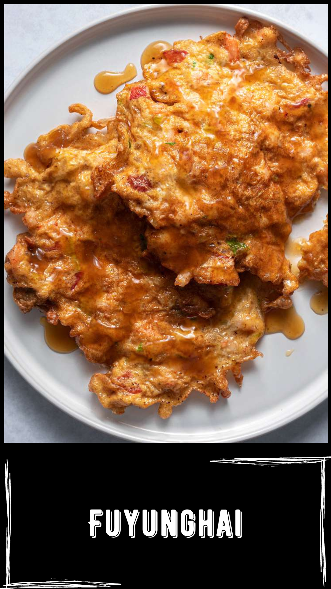

Resep:
- Dalam wadah campur semua bahan fuyunghai kecuali air. Aduk rata, baru masukkan air sedikit demi sedikit sampai didapat kekentalan yang diinginkan.
- Panaskan minyak, goreng fuyunghai sampai kecoklatan. Angkat dan tiriskan. Siram dengan saus ketika akan disajikan.
- Untuk membuat saus, panaskan margarin, tumis bawang putih, bombay dan buncis sampai wangi.
- Masukkan saus tiram, saus tomat & saus sambal, aduk rata. Tambahkan air dan gula, masak sampai mengental. Angkat dan siap dijadikan saus siraman.